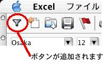
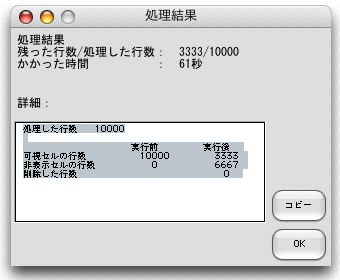

このマクロはウィルスチェックがされていません。この使用者がマクロが入ったファイルを開く前にウィルスチェックをしてください。 詳しくは、Excelのヘルプの『ウィルスとブックのマクロのついて』を参照してください。
Windows版のExcelを使っている人は、アドインをインストールする前に、Excelのセキュリティーレベルを"中"にしておいてください。具体的な方法は、です。
- [ツール]メニューの[マクロ]の[セキュリティ]をクリックします。
- [中]オプションボタンをクリックして[OK]ボタンを押します。
Excelのメニューの[ツール]-[アドイン]からアドインを登録してください。
アドインを登録すると、Excelメニューの[標準]ツールバーの一番左に[特定の色の付いたセルの行だけ残す]ボタンが追加されます。

※ボタンの移動やコピーはExcelメニューの[ツール]-[ユーザ設定]より行ってください。
[特定の色の付いたセルの行だけ残す]ボタンを押下してください。
- [対象の範囲:]
セルの塗りつぶしの色を調べ、行を非表示または削除する際の、色を調べるセル範囲（一列、単一範囲）を指定します。- [色の選択]
- カラーパレット（塗りつぶしなし＋56色）
残したい色をクリックして、選択状態にします。- [すべて選択]、[すべて解除]
[すべて選択]をクリックすると、すべての色を選択状態にし、[すべて解除]をクリックすると、すべての色の選択を解除します。- [選択する色をセルから参照:]
セルから色を拾得します。（６、セルの塗りつぶしの色が判らないときで説明します。）- [オプション]
７、オプションの使用で説明します。- [このマクロについて]
このアドインについての情報を見ることができます。
- [バージョン]
アドイン名と、バージョン情報を見ることができます。- [作成者]
このアドインの作成者の名前と、連絡先の情報を見ることができます。- [ヘルプ]
このアドインの使い方を見ることができます。- [キャンセル]
何もせず画面を閉じます。- [非表示にする]、[削除する]
[対象の範囲:]で選択したセル範囲に含まれるセルの塗りつぶしの色を調べ、その色が[色の選択]で選ばれなかった色であった場合、その行を非表示（[非表示にする]をクリックした場合）または、削除（[削除する]をクリックした場合）します。
注意：実行後、元に戻すことができません。
処理スピードについてはこちらを参照してください
- [対象の範囲:]にこのマクロを実行するセル範囲を指定します。
（ここで指定されたセル範囲で、選択された色で塗りつぶされたセルの行を残し、他を非表示または削除します。なお、選択するセル範囲は、1列のみとし、また、複数範囲を指定することはできません。）- 残したい色（非表示、または削除したくない色）をクリック、またはセルから参照して選択状態にします。
- [非表示にする]もしくは[削除する]ボタンをクリックします。（実行後、元に戻すことができません。）
- 処理が終わると以下のようなメッセージボックスが表示されますので、[OK]ボタンをクリックしてください。

※上の画面で、"3333/10000"は、
残った行の数（非表示または削除されなかった行の数）/処理した行の数
を表しています。
※[コピー]ボタンを押すと結果の詳細をクリップボードにコピーすることができます。
Excelでは56色の色を使うことができますが、そのなかには似ていて区別のつきにくい色もあります。
ここでは、あるセルの塗りつぶしの色がよく判らないとき（忘れてしまったとき）に、どうすれば良いかを説明します。このようにして、セルの塗りつぶしの色を拾得することができます。
- [すべて解除]ボタンを押し、すべての色について選択をはずします。（やらなくても可）
- [選択する色をセルから参照:]に塗りつぶしの色を調べたいセル（範囲）のアドレスを入力します。（右端のボックスをクリックするとウインドウが折りたたまれて、マウスを使って容易にセルアドレスを拾得することができます。）
- [参照]ボタンをクリックします。
なお、[参照]ボタンを押してから、処理が終わるまで、かなりの時間 を要することがあります。そのため、参照するセル範囲はできるだけ、必要最小限度の範囲にしてください。
- [実行前に非表示だった行を表示する]チェックボックス
デフォルトではチェックが入っている状態です。このチェックをはずして実行すると、実行前に非表示だった行はたとえ、セルの塗りつぶしの色が残す色であったとしても、表示されることはありません。
チェックをはずすと、２つ以上の列についてのand検索と同じことをすることができます。- [セル内容がなかったとき]フレームについて
ここではセルの内容（数式）がなかったときの処理を設定することができます。
- Excelのメニューの[ツール]-[アドイン]からアドインを解除してください。
これにより、[特定の色の付いたセルの行だけ残す]ボタンが削除されます。- アドインファイルを削除してください。
Ver.2.2.4以前（マクロ形式）を使用していた方は、前バージョンを削除した後、このバージョンをインストールしてください。